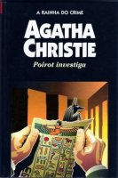

Poirot Investiga
Poirot Investigates
Baixinho, sempre impecavelmente vestido, metódico e organizado, capaz de encontrar uma solução para os casos mais difíceis usando apenas as suas “pequenas células cinzentas”. Assim é o detetive belga Hercule Poirot, uma das mais fascinantes criações de Agatha Christie. Nesta seleção de alguns dos melhores contos da autora, Poirot investiga o seqüestro de um primeiro-ministro, soluciona um roubo de um milhão de dólares, encontra um testamento desaparecido e vive uma emocionante aventura numa tumba egípcia. Ao seu lado, ajudando-o em suas deduções, seu fiel amigo e auxiliar, o valente e ingênuo Capitão Hastings.
A Aventura do “Estrela do Ocidente”
Atriz do cinema americano recebe cartas que ameaçam roubar seu diamante e Poirot entra em ação e consegue evitar o roubo.
A Tragédia de Marsdon Manor
Poirot investiga a morte de um senhor que cometeu suicídio mas tinha também uma apólice de seguros muito alta.
A Aventura do Apartamento Barato
Depois de um casal ter dito que alugou um apartamento por um preço muito abaixo do mercado, Poirot decide investigar o motivo e encontra uma resposta surpreendente.
O Mistério de Hunter's Lodge
Depois do assassinato de um milionário, Poirot é chamado para resolver a questão mas doente manda Hastings ir em seu lugar. Apenas com os telegramas mandados por Hastings, Poirot descobre a identidade do assassino.
O Roubo de Um Milhão de Dólares em Obrigações do Tesouro
Poirot e Hastings são chamados para investigar o roubo de um milhão de dólares. O roubo aconteceu no navio que levava os títulos para a américa. Mas depois de uma revista em todos os passageiros, nada foi descoberto. Só Poirot consegue descobrir a maneira que os ladrões usaram para roubar os títulos.
A Aventura da Tumba Egípcia
Algumas mortes numa expedição ao Egito atribuídas a uma maldição levam Poirot a uma investigação minuciosa que acabam em um assassino frio e calculista.
O Roubo das Jóias no Grand Metropolitan
Numa estadia em um hotel, Poirot e Hastings acabam tendo que resolver o mistério do desaparecimento das jóias de uma senhora muito rica, encontrando novamente os culpados.
O Primeiro-Ministro Seqüestrado
Após o desaparecimento do primeiro-ministro da inglaterra que iria para uma convenção internacional, Poirot é chamado para encontrá-lo antes que a convenção se inicie.
O Desaparecimento do Sr. Davenheim
O inspetor Japp duvida que Poirot encontre o Sr. Davenheim sem sair de casa. Mesmo com um plano muito astuto, Poirot descobre onde o Sr. Davenheim está e o que ele fez com o dinheiro roubado.
A Aventura do Pobre Italiano
Poirot investiga o caso da morte de um conde italiano que morreu de uma forma brutal. Depois de algumas investigações ele descobre a identidade do assassino.
O Caso do Testamento Desaparecido
Poirot tenta descobrir onde está o testamento que um rico fazendeiro deixou para sua sobrinha. Apenas Poirot descobre a maneira engenhosa que o fazendeiro utilizou para esconder o testamento.
A Dama de Véu
Lady Millicent vai a Poirot para que ele consiga reaver uma carta escrita por ela há muito tempo, que está em poder de um chantageador que pode acabar com seu noivado. Na carta existem declarações comprometedoras.
A Mina Perdida
Chinês é encontrado morto e os papéis sobre as condições de uma mina que está a muito tempo abandonada desapareceram. Poirot é chamado e, como sempre, descobre os papéis e desvenda a identidade do assassino.
A Caixa de Chocolates
Poirot conta a Hastings um caso em que chegou a uma conclusão errada ao final das investigações. Depois da morte de um famoso deputado, Poirot é chamado para descobrir a verdadeira causa de seu falecimento. Ao esquecer de levar em conta um pequeno detalhe, Poirot falha. Apenas com a confissão do assassino é que ele descobre os erros que cometeu.